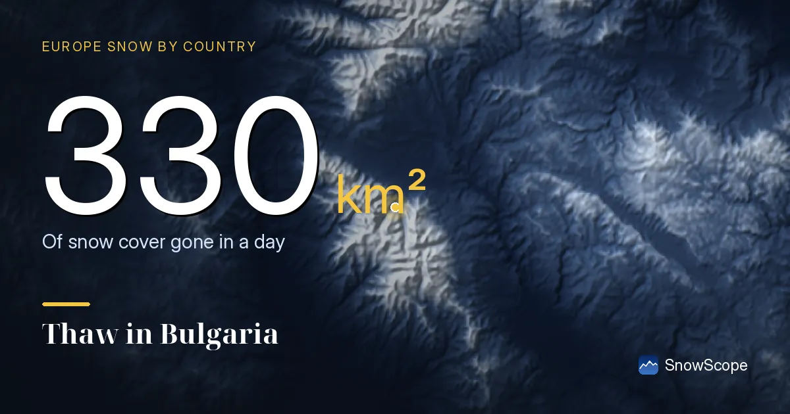
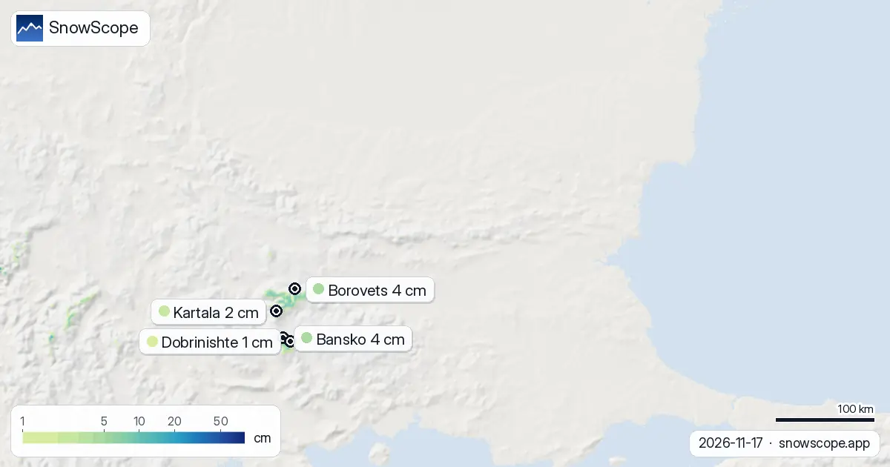

Thaw in Bulgaria: 330 km² of snow cover gone in a day
Yesterday about 690 km² was white in Bulgaria; today 360 km² is left, 330 km² less in one day.
See the live snow forecast for Bansko in the SnowScope appSnow depth, powder alerts and the 3D map, free.
A mild day eats the snow
Mild air hits the thin snow of the valleys first. Expect wet, heavy snow low down in the afternoon and firm, icy patches the next morning.
In Bulgaria, about 360 km² of high ground is white today, 330 km² less than yesterday. That is 1 % of the high ground we map in Bulgaria.
| Resort | Snow depth | New snow, 72 h | Coming, next days | Top |
|---|---|---|---|---|
| Bansko | 4 cm | 9 cm | 2 cm | 2,516 m |
| Borovets | 4 cm | 7 cm | 3 cm | 2,538 m |
| Kartala | 2 cm | 6 cm | 1 cm | 2,245 m |
| Dobrinishte | 1 cm | 7 cm | 1 cm | 2,226 m |

Low, middle and high ground
Height makes the difference: 2,000-2,500 m: on average 1 cm (36 % of the ground white); above 2,500 m: on average 3 cm (87 % white).

Where to ski first
The deepest snow of the country's resorts is at Bansko: 4 cm.
Next on the list: Borovets (4 cm), Kartala (2 cm) and Dobrinishte (1 cm).
At Bansko: 9 cm of fresh snow over three days, 2 cm more expected by Friday 20 November.
Borovets picked up 7 cm in the last three days and could add 3 cm by Friday 20 November.
Count 4 white resorts out of 11 in Bulgaria today.
The rest of the shortlist: Kartala: 2 cm on top, 6 cm in three days, 1 cm expected; Dobrinishte: 1 cm on top, 7 cm in three days, 1 cm expected.
The next days
Snow is in the forecast: up to 1 cm by the end of the third day, up to 8 cm within seven days.
Monday 23 November stands out, with up to 5 cm in a day.
Skiing conditions
The snow is retreating uphill, so plan on the higher lifts and avoid the low valley runs.
How much of the country is white
That is close to the 330 km² of a week ago. Think 2,300 m and higher for a white landscape.
Fresh snow
Three-day totals peak at 6 cm, around the Rila Mountains, the Pirin Mountains and Vitosha.
At least 5 cm fell over some 310 km².
The neighbours today
For comparison, the neighbours on the same day: Romania: 12 % white, deepest Havas Bucsin with 31 cm, up to 21 cm in the week ahead; Serbia: 0 % white, deepest Ски центар Копаоник with 20 cm, up to 2 cm in the week ahead.
Planning a day on the snow
Above 2,500 m the ground is almost fully white (87 % covered), so runs up there have a continuous base.
Between 2,000 m and 2,500 m the cover is patchy, about 36 % white: expect grass and stones between the snow.
Below 2,000 m the slopes are still almost bare.
Little new snow is expected in the next three days, so today's picture should hold for a weekend trip.
Tips for skiers
- Fresh snow on a cold base sticks badly: take care on steep slopes.
- Morning snow is firm after a clear night: wait for the sun on south faces.
- Snow above the tree line can be wind-packed: watch the ridges.
About these numbers
Resort snow depths are the deepest snow on the resort's upper slopes from the SnowScope snow model (about 1 km, run of 17 November); they are estimates for an area, not a measurement at one point. Station values are measurements on the date shown. Forecasts can change. Always read the official avalanche bulletin before going off-piste.
Cite this report
For research, teaching or the press: the numbers and charts are free to reuse under CC BY 4.0 with this citation.
SnowScope (2026), Thaw in Bulgaria: 330 km² of snow cover gone in a day, https://snowscope.app/blog/en/2026/11/bulgaria-snow-report-17-november-2026.html, accessed 2026-11-17
SnowScope (Atlas Labs). (2026, November 17). Thaw in Bulgaria: 330 km² of snow cover gone in a day. SnowScope snow reports. https://snowscope.app/blog/en/2026/11/bulgaria-snow-report-17-november-2026.html
BibTeX
@misc{snowscope2026bulgariasnowreport17nove,
author = {{SnowScope (Atlas Labs)}},
title = {Thaw in Bulgaria: 330 km² of snow cover gone in a day},
year = {2026},
month = nov,
howpublished = {\url{https://snowscope.app/blog/en/2026/11/bulgaria-snow-report-17-november-2026.html}},
note = {Published 2026-11-17 12:53 UTC; accessed 2026-11-17}
}· CC BY 4.0 · Methods, data and tools →
Bansko: snow and temperature by height, this winter vs last (tools) →
Follow Bansko
Free: a message when fresh snow is coming, and the forecast every morning.
More snow reports

SnowScope's peak finder is a free peak finder app: point your phone at the mountains and it names the summits, with height, distance and climb time. Our tests: 98 % of the summits it lists are really in sight, and on real photos it corrected compass errors of up to 105° to 0.15°. Free with 3 names, every peak for $0.99 once.

Snow is falling on Slovenia's ski mountains today: about 37 cm on Kanin and 21 cm on Krvavec. Where the snow lies, how it compares with past winters, and the next snowy day.

Tornik on Zlatibor had up to 39 cm on its upper slopes on 15 November 2026; by Wednesday it had melted. Kopaonik barely turned white. The week day by day and what comes next.